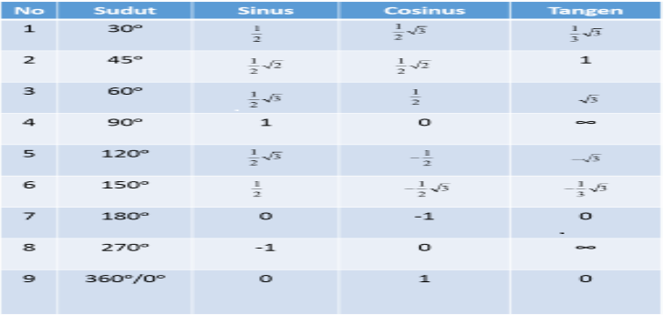

Website ini dirancang untuk memberikan pengalaman pembelajaran yang interaktif dan dinamis, memanfaatkan teknologi untuk menyajikan konsep-konsep trigonometri dengan cara yang menarik dan mudah dipahami. Dengan menggunakan visualisasi grafis dan animasi, website ini memberikan gambaran visual yang memukau untuk membantu siswa memahami geometri sudut dan fungsi trigonometri secara lebih jelas. Website ini memberikan aksesibilitas tinggi, memungkinkan pengguna untuk belajar kapan saja dan di mana saja melalui berbagai perangkat, menjadikan pembelajaran trigonometri lebih fleksibel sesuai dengan kebutuhan individu. Menyediakan kalkulator trigonometri interaktif yang mempermudah siswa dalam melakukan perhitungan kompleks, sehingga mereka dapat lebih fokus pada pemahaman konsep-konsep trigonometri. Memberikan akses mudah ke sumber-sumber belajar tambahan, seperti artikel, video tutorial, dan referensi terkini, untuk memperdalam pemahaman siswa tentang topik trigonometri. Website ini berkomitmen untuk selalu mengupdate konten terbaru sesuai dengan perkembangan ilmu pengetahuan dan kurikulum, sehingga siswa selalu mendapatkan informasi yang relevan dan akurat.
Trigonometri adalah cabang ilmu dalam Matematika yang mempelajari hubungan antara sisi dan sudut pada segitiga. Hubungan itu biasanya dinyatakan sebagai perbandingan sinus, kosinus, dan tangen. Melalui perbandingan ini, kamu bisa dengan mudah menentukan panjang sisi segitiga meskipun hanya diketahui panjang salah satu sisi dan sudutnya saja. Jenis-Jenis Trigonometri Perbandingan dasar trigonometri terdiri dari sinus, kosinus, dan tangen. Dari perbandingan tersebut, akan muncul perbandingan lain, seperti kosekan, sekan, dan kotangen. Apa sih maksud perbandingan-perbandingan tersebut? Untuk lebih jelasnya, perhatikan gambar segitiga siku-siku berikut. Dengan: x = AB = panjang sisi mendatar segitiga; y = BC = panjang sisi tegak segitiga; r = AC = panjang sisi miring atau sisi terpanjang segitiga; dan = besarnya sudut yang dibentuk oleh sisi-sisi segitiga. Dari gambar segitiga di atas, trigonometri memuat perbandingan sisi-sisi segitiga terhadap sudutnya, sehingga diperoleh sinus, kosinus, dan tangen. Lalu, apa rumus perbandingan sinus, kosinus, dan tangen? Sinus atau bisa disingkat sin adalah perbandingan antara panjang sisi di depan sudut dan panjang sisi miring.
KLIK DIBAWAH UNTUK MENGGUNAKAN KALKULATOR SINUS!